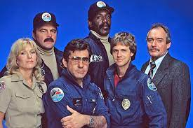
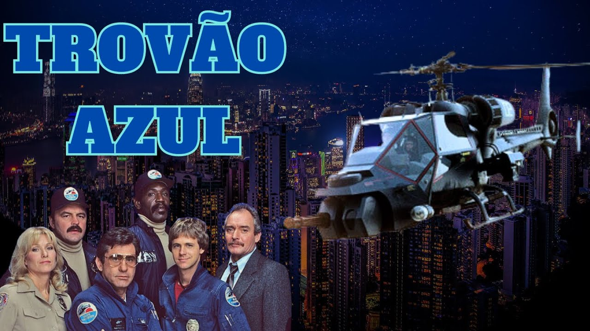

Trovão Azul
Baseado no filme homônimo estrelado por Roy Scheider, de Tubarão e Malcolm McDowell, o Alex DeLarge de Laranja Mecânica, o seriado Trovão Azul contou apenas com uma temporada, mesmo contando com um elemento de sucesso para programas da década: uma máquina de alta tecnologia e muito poder.
No longa Frank Murphy (Scheider) é piloto de um helicóptero militar de ultima geração adaptado para o uso policial, com modernas armas de destruição, microfones e câmeras, modo de vôo camuflado e outros acessórios.
QUANTIDADE DE EPISÓDIOS
Murphy é um tira durão de Los Angeles e veterano da Guerra do Vietnam que acaba descobrindo seu antigo nemesis, Coronel Cochrane (MacDowell) envolvido numa trama política. O filme foi dirigido por John Badham (Alta Tensão) e recebeu indicação ao Oscar de melhor edição. No seriado o piloto era o tenente Frank Chaney que teve como parceiro o novato Clinton 'JAFO' Wonderlove. No apóio terrestre os pilotos contavam com a ajuda do Capitão Braddock e o par Lyman 'Bubba' Kelsey e Richard 'Ski' Butowski.
*Temporadas: 1
* Exebição: 1984
* Episódios: 11
INFORMAÇÕES EXTRAS
O nome Trovão Azul é uma referência a um projeto de helicóptero real do exército americano chamado de Comanche, que nunca chegou a ser produzido. Para as cenas de voo, foram utilizados dois helicópteros diferentes: um Bell 222 e um Aérospatiale SA 341 Gazelle. O Bell 222 utilizado nas filmagens pertencia ao piloto Frank Tallman, que já trabalhou em vários filmes de Hollywood como piloto de avião e helicóptero. A trilha sonora de Trovão Azul foi composta por Arthur B. Rubinstein, que também escreveu a música do filme WarGames (Jogos de Guerra). O roteiro do filme foi escrito por Dan O’Bannon e Don Jakoby, que também escreveram o roteiro do clássico de ficção científica, Alien, o Oitavo Passageiro. Uma série de TV baseada no filme foi produzida em 1984, com James Farentino no papel principal. Trovão Azul foi lançado em maio de 1983, no mesmo fim de semana que Star Wars: Episódio VI – O Retorno de Jedi. O filme foi filmado principalmente em Los Angeles, com várias cenas sendo gravadas em torno do Aeroporto Internacional de Los Angeles. Durante as filmagens, um dos helicópteros foi danificado quando atingiu um fio de alta tensão, mas felizmente nenhum membro da equipe ficou ferido. A equipe de filmagem usou miniaturas em escala para criar as cenas de explosão de um carro-bomba. O papel principal foi originalmente oferecido a Clint Eastwood, que o recusou para estrelar no filme Dívida de Sangue. O personagem de Daniel Stern, Jafo, foi inspirado em um policial de Los Angeles chamado Dennis M. Gilbert, que serviu como consultor técnico no filme. Trovão Azul foi indicado para o Oscar de Melhores Efeitos Sonoros em 1984, mas perdeu para Star Wars: Episódio VI – O Retorno de Jedi. O filme foi lançado em VHS e Beta em outubro de 1983 e em DVD em maio de 1998. Roy Scheider disse em entrevista que considerou Trovão Azul um dos filmes mais difíceis que já fez devido às cenas de voo arriscadas e ao calor de Los Angeles durante as filmagens.